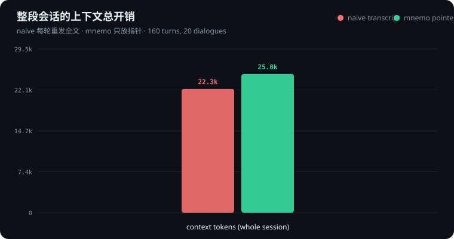
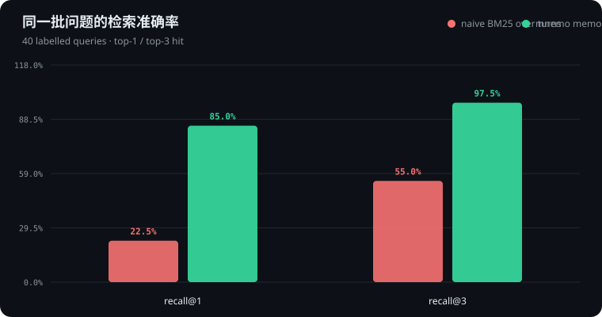
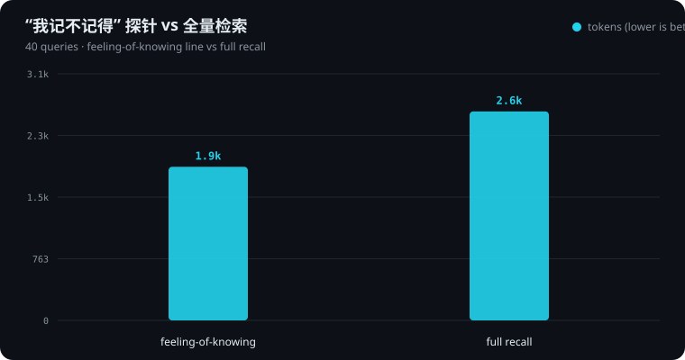
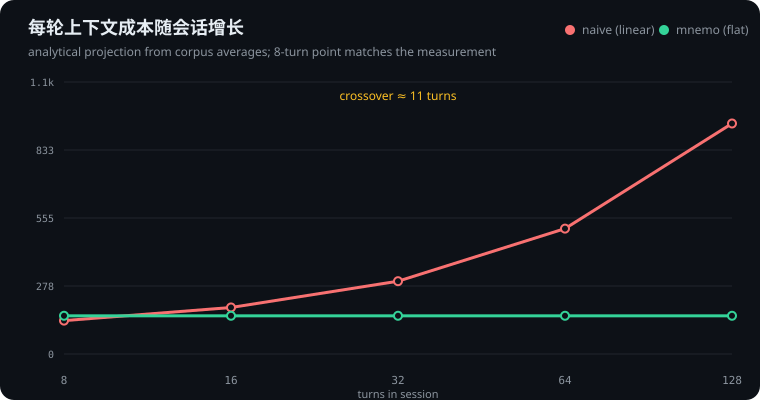

mnemo · dialogue benchmark
20 dialogues · 160 turns · 44 facts · 40 labelled queries · generated 2026-11-13T14:20:28Z
recall@1
85.0%
naive 22.5%
recall@3
97.5%
naive 55.0%
tokens / turn
156.2
naive 139.3 · 8-turn corpus
probe saving
26.5%
1902 vs 2588 tok




按领域（recall@1）
| domain | dialogues | queries | naive | mnemo |
|---|---|---|---|---|
| coding | 6 | 12 | 25.0% | 100.0% |
| health | 1 | 2 | 50.0% | 50.0% |
| life | 4 | 8 | 25.0% | 87.5% |
| study | 3 | 6 | 16.7% | 66.7% |
| travel | 2 | 4 | 50.0% | 100.0% |
| work | 4 | 8 | 0.0% | 75.0% |
Reproduce: npm run bench:dialogue then npm run bench:render. Corpus: bench/data/dialogues.jsonl (curated, labelled by hand). The naive baseline resends the full transcript plus the same system prompt every turn. Numbers are estimates from mnemo's own tokeniser, not a provider's tokenizer.